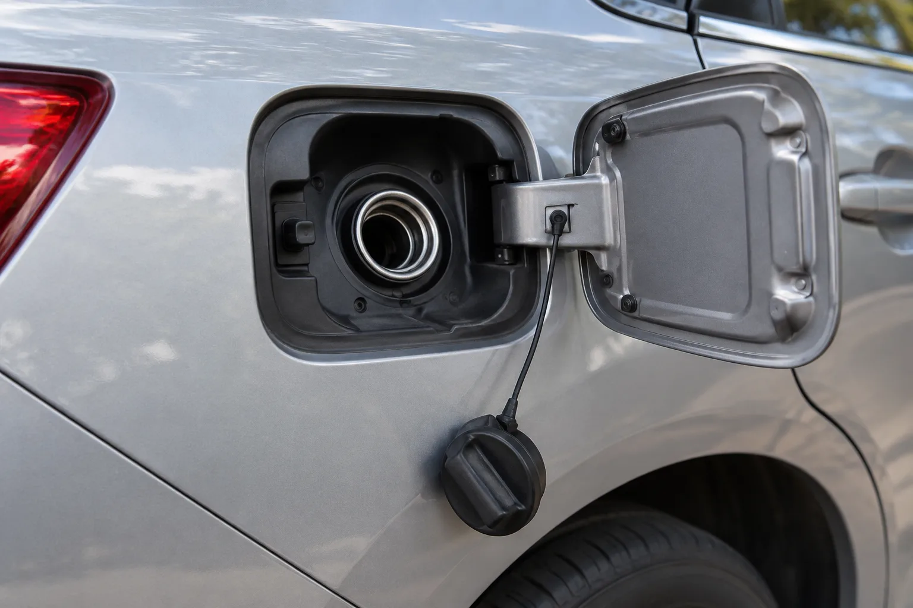
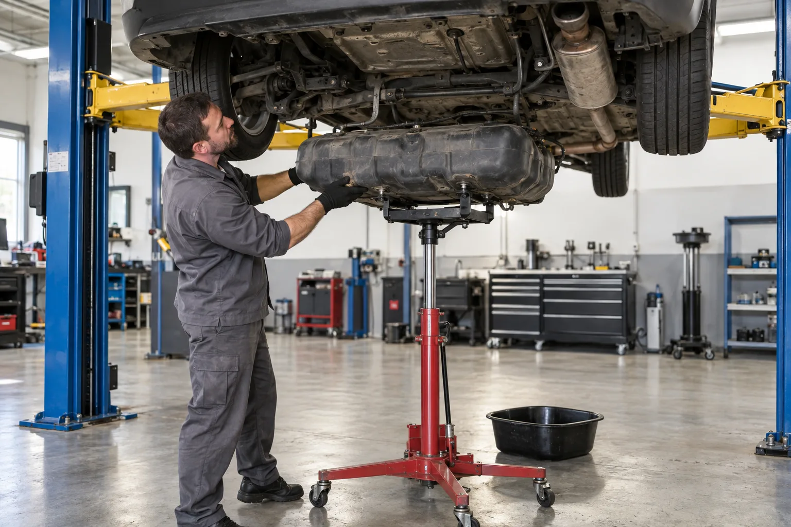
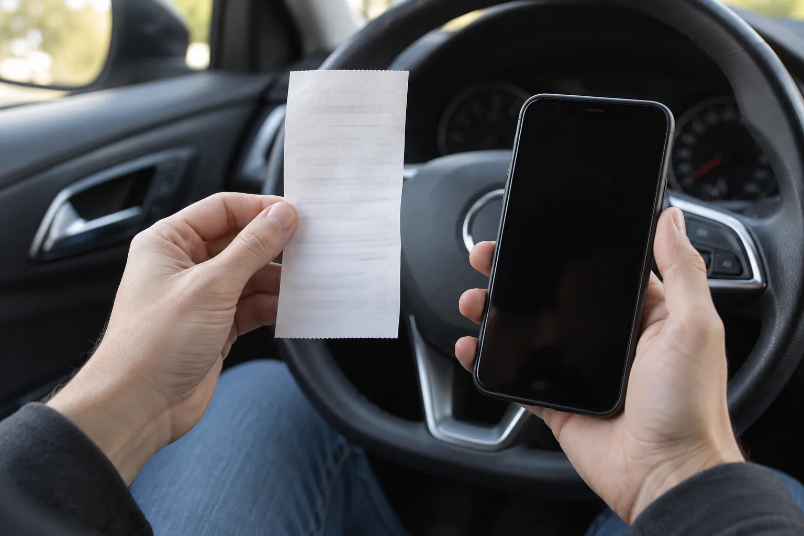

▲ 주유구 앞에서 노즐을 든 채 멈칫하는 순간 이미지=AI 생성
주유를 끝내고 영수증을 봤더니 유종이 다르다. 또는 주유소를 나와 몇 km 달렸는데 차가 덜덜 떨리고 힘이 빠진다. 혼유(混油), 즉 차에 맞지 않는 연료가 들어간 상황이다.
이때 가장 중요한 건 엔진을 더 돌리지 않는 것이다. 시동을 걸거나 주행을 계속할수록 잘못된 연료가 연료펌프, 인젝터, 고압펌프까지 퍼지고 수리비는 수십만 원에서 수백만~천만 원대로 뛴다. 지금 당장 할 일부터 정리했다.
1. 상황별로 지금 해야 할 일
한국소비자원은 혼유가 확인되면 시동을 걸지 말고 차량을 운행하지 말 것, 그리고 즉시 점검을 받을 것을 권고한다. 언제 알았느냐에 따라 순서만 조금 다르다.
① 주유 중이거나 주유 직후, 시동을 걸기 전에 알았을 때
- 주유를 즉시 멈춘다. 노즐을 빼고 주유구 캡을 닫는다.
- 시동을 걸지 않는다. 연료펌프가 돌기 시작하면 잘못된 연료가 라인 안으로 들어간다. 확신이 서지 않으면 전원도 켜지 않는 편이 안전하다.
- 주유소 직원(셀프라면 관리자)에게 바로 알린다. 주유기 번호, 주유 시각, 주유량을 함께 확인해 둔다.
- 영수증과 사진을 남긴다. 카드 영수증의 유종 표기, 주유기 화면, 차량 주유구 주변을 촬영한다.
- 차를 밀거나 견인해 옮긴다. 주유기 앞을 막고 있다면 시동 없이 기어를 중립에 두고 밀어서 옮기고, 이후 견인차로 정비소까지 이동한다.
- 정비소에서 연료를 빼내고 탱크를 세척한다. 시동 전이라면 대개 이 단계로 끝난다.
▲ 혼유 차량을 시동 없이 견인차에 싣는 장면 이미지=AI 생성
② 이미 시동을 걸었거나, 달리다가 이상해서 알았을 때
- 비상등을 켜고 가장 가까운 안전한 곳(갓길 밖, 휴게소, 주차장)에 세운다. 고속도로 본선에서는 무리하게 급정거하지 말고 안전지대까지 이동한다.
- 즉시 시동을 끄고 다시 걸지 않는다. "정비소까지만 몰고 가자"는 판단이 수리 범위를 가장 크게 키운다.
- 차에서 내려 가드레일 밖 등 안전한 곳으로 대피한 뒤 보험사 긴급출동이나 견인을 부른다. 고속도로라면 한국도로공사 콜센터(1588-2504)에도 알린다.
- 주유한 주유소에 연락해 날짜·시각·주유기 번호·유종을 전달하고, 통화 내용은 메모하거나 문자로 남긴다.
- 정비소에 "혼유 의심"이라고 분명히 말하고 연료 샘플 확인과 함께 손상 부품을 점검받는다. 점검·정비 명세서와 교체 부품 내역은 반드시 받아 둔다.
📍 주유소를 나온 뒤 이런 증상이면 혼유를 의심
주유 직후부터 시동이 자꾸 꺼지거나, 가속할 때 힘이 빠지고, 평소 없던 진동·소음이 나거나, 배기구에서 검은 연기가 나온다면 혼유를 의심해 볼 만하다. 2026년 8월 부산 사하구 셀프주유소 사고처럼 운전자 잘못이 전혀 없이 주유소 저장탱크 자체에 다른 기름이 섞인 경우도 있다. 이 사고에서는 직원이 휘발유 저장탱크에 경유를 잘못 넣으면서 약 180대가 피해를 입었고, 피해 차주들은 "주행 중 이상한 소음이 들려 정비소에 갔다가 혼유 사실을 알았다"고 전했다.
2. 휘발유차에 경유 vs 경유차에 휘발유, 어느 쪽이 더 문제일까
두 엔진은 불을 붙이는 방식부터 다르다. GS칼텍스 설명에 따르면 휘발유 엔진은 점화플러그 불꽃으로 연료를 태우고, 디젤 엔진은 공기를 강하게 압축해 온도를 올려 연료가 스스로 불붙게 한다. 맞지 않는 연료가 들어가면 연소 시점이 틀어지고 연료분사 계통과 밸브 장치까지 이상이 생길 수 있다.
| 구분 | 휘발유차에 경유 | 경유차에 휘발유 |
|---|---|---|
| 발생 빈도 | 상대적으로 적음. 경유 주유건이 휘발유차 주유구보다 굵어 잘 들어가지 않는 경우가 많다 | 더 흔함. 가는 휘발유 주유건이 넓은 경유차 주유구에 쉽게 들어간다 |
| 주요 증상 | 검은 배기가스, 엔진 부조, 시동 꺼짐 | 시동 꺼짐, 출력 저하, 진동·소음, 시동 불능 |
| 손상 위험 부위 | 점화·연소 계통, 연료필터, 인젝터. 계속 주행하면 엔진 손상과 화재 위험까지 거론된다 | 연료펌프, 고압펌프, 인젝터, 연료레일 등 고압 연료분사 계통 |
| 보도된 고액 수리 사례 | 2026년 부산 사고(휘발유차에 경유 섞인 연료): 차량 상태에 따라 약 100만 원~수천만 원 | 2016년 대구 사례: 인젝터·고압펌프·연료펌프·연료레일 교환, 청구 수리비 1,758만 원 |
GS칼텍스는 혼유 사고 대부분이 경유차에 휘발유가 들어가는 경우이고, 그 이유 중 하나로 주유건 지름 차이를 꼽는다. 업계 설명에 따르면 경유 주유건은 지름 약 24mm로 휘발유차 주유구(약 21mm)보다 굵어 휘발유차에는 잘 들어가지 않지만, 반대로 가는 휘발유 주유건은 경유차 주유구에 쉽게 들어간다. 그래서 혼유 사고는 경유차에 휘발유를 넣는 쪽이 더 많다. 다만 차종이나 주유기에 따라 경유 주유건이 휘발유차에 들어가는 경우도 있어 이 차이만 믿어서는 안 된다.
📍 "어느 쪽이 더 위험하냐"보다 중요한 것
휘발유차에 경유를 넣고 계속 달리면 엔진 손상과 화재까지 이어질 수 있다는 경고가 있고(아시아경제), 경유차에 휘발유가 들어가면 비싼 고압 연료분사 부품이 망가진 사례가 판례로 남아 있다(대구지법). 어느 쪽이든 결론은 같다. 얼마나 오래 엔진을 돌렸느냐가 수리비를 가른다. 휘발유를 넣은 경유차는 시동이 아예 안 걸리는 경우도 많은데, 걸리지 않는다고 여러 번 반복해서 시동을 시도하는 것도 피해야 한다.

▲ 주유구 덮개와 캡을 연 모습. 주유구 지름은 유종에 따라 다르지만 이것만으로 혼유를 완전히 막을 수는 없다 이미지=AI 생성
3. 수리 범위와 비용: 시동 여부가 가른다
수리비는 "잘못된 연료가 어디까지 흘러갔느냐"로 결정된다. 탱크 안에만 머물렀다면 빼내고 씻어내면 되지만, 엔진이 돌면서 연료라인과 분사 계통까지 들어갔다면 부품을 통째로 바꿔야 한다.
| 상황 | 주요 작업 | 비용(출처) |
|---|---|---|
| 시동 전 발견 | 연료 배출, 연료탱크 세척, 새 연료 주입 | 수십만 원 수준(인천일보 보도) |
| 시동·짧은 주행 후 | 연료필터 교환, 연료라인 세척 등 | 대구 사례 1심은 이 범위만 인정해 95만 원 산정(2017년 판결, 항소심에서 변경) |
| 부품 교체 필요 | 연료펌프·인젝터 등 교체 | 300만~500만 원(인천일보 보도) |
| 고압 계통 전면 교체 | 인젝터·고압펌프·연료펌프·연료레일 교환 | 청구 1,758만 원, 항소심 인정 1,355만 원(대구지법 2018년 7월 판결) |
| 대규모 사고 사례 | 차량 상태별 상이 | 약 100만 원~수천만 원(2026년 9월 파이낸셜뉴스, 부산 사고) |

▲ 정비소에서 연료탱크를 내려 세척하는 작업 이미지=AI 생성
📍 수리비가 차값보다 비싸면? 법원은 '차량 가치'까지만 인정
대구지방법원 제4민사부는 2018년 7월 26일(2017나314289) 경유차에 휘발유 67리터가 주유돼 약 200m 주행 뒤 진동과 함께 시동이 꺼진 사건에서 주유소 운영자에게 100% 책임을 인정했다. 다만 수리비가 사고 직전 차량의 교환가격(1,405만 원)을 넘는 경우에는 교환가격에서 고철값(50만 원)을 뺀 1,355만 원까지만 배상하도록 했다. 오래된 차일수록 실제 수리비를 다 받지 못할 수 있다는 뜻이다.
4. 누구 책임일까: 셀프 주유소 vs 직원 주유 주유소
누가 주유기를 잡았느냐가 출발점이다. 다만 직원이 넣었더라도 운전자가 할 일을 하지 않았다면 일부 책임을 나눠 지게 된다.
| 상황 | 책임 판단 |
|---|---|
| 셀프 주유소에서 내가 잘못 넣음 | 운전자 본인 과실. 주유소에 책임을 묻기 어렵고, 자동차보험 자기차량손해로도 보상받지 못하는 것이 원칙 |
| 셀프 주유소지만 주유소 탱크에 다른 기름이 섞임 | 주유소 책임. 2026년 부산 사고에서 주유소는 피해 차주 보상 의사를 밝혔고, 관할 구청은 한국석유관리원 검사 결과를 보고 행정처분을 정하기로 했다 |
| 직원이 주유(일반 주유소) | 주유소 책임이 원칙. 대구지법 2018년 판결은 주유소 100% 책임 인정 |
| 직원 주유 + 운전자가 유종 미고지·확인 소홀 | 운전자 과실 일부 인정. 서울동부지법(2015년 10월)은 경유차 운전자가 유종을 밝히지 않은 점을 들어 과실 10%, 한문철 변호사는 법원이 20~30%까지 보기도 한다고 설명 |
서울신문(2017년) 보도에 따르면 운전자 과실로 잡히는 대표적인 행동은 시동을 끄지 않고 주유받은 경우, 직원에게 차의 유종을 미리 말하지 않은 경우, 영수증을 확인하지 않은 경우다. 최근 제주에서는 직원 실수로 경유차에 휘발유가 들어가 수리 견적이 1,200만 원이 나왔는데, 주유소 보험사가 "운전자도 영수증 확인 등을 하지 않았다"며 10% 과실을 주장한 사례가 보도되기도 했다(서울경제).

▲ 주유 영수증을 확인하는 모습. 영수증은 혼유 보상을 받을 때 가장 기본적인 증거가 된다 이미지=AI 생성
✅ 보상 받으려면 챙겨야 할 것
· 주유 영수증: 한국소비자원은 신용카드 영수증에 연료 종류와 리터당 가격이 적혀 있다며 보관을 당부한다. 현금영수증·카드 결제 내역도 함께
· 주유 기록: 주유소 이름, 날짜·시각, 주유기 번호, 주유량을 메모하고 가능하면 사진으로
· 정비 서류: 점검·정비 명세서, 교체 부품 내역, 수리비 영수증, 견인비 영수증
· 연락 기록: 주유소와 통화·문자 내용
· 합의가 안 되면: 1372 소비자상담센터를 통해 한국소비자원에 상담·피해구제를 신청할 수 있다. 소비자원에는 최근 3년간 혼유 관련 상담이 전국에서 100건 넘게 접수됐다(서울경제 보도)
자동차보험은 어디까지 되나
혼유로 생긴 엔진·연료계통 고장은 일반 자동차보험으로 보상받기 어렵다. 자기차량손해 약관은 보상 대상인 '물체'를 "구체적인 형태를 지녀 충돌·접촉으로 차 외부에 직접 손상을 줄 수 있는 것"으로 보고, 엔진 내부나 연료탱크에 이물질을 넣는 경우는 물체로 보지 않는다(소비자가만드는신문). 2026년 부산 사고를 전한 한국경제도 일반 자동차보험은 혼유 고장을 보상 대상으로 보지 않는다고 짚었다. 일부 보험사는 혼유 관련 별도 특약을 판매하기도 하므로 내 보험에 가입돼 있는지 확인해 볼 만하다.
견인은 따로 봐야 한다. 긴급출동 특약에 가입돼 있다면 고장으로 차를 움직일 수 없을 때 긴급견인을 쓸 수 있고, 무료 견인 거리는 보험사와 상품에 따라 다르다. 예를 들어 DB손해보험은 10·20·40km 중에서 고르고, KB손해보험은 기본 서비스가 10km, 상위 서비스가 70km다. 혼유 차량을 견인해 주는지, 거리 초과분은 얼마인지는 상품마다 다를 수 있으니 콜센터에 "혼유로 시동을 걸 수 없다"고 정확히 말하고 확인하는 게 좋다. 주유소 과실이라면 견인비 영수증도 배상 청구에 포함한다.
5. 절대 하면 안 되는 것
⛔ 혼유를 알았다면 이것만은 하지 말자
· "조금이니까 괜찮겠지" 하고 시동 걸기: 소량이라도 판단은 정비소에서. 시동은 연료를 엔진 쪽으로 보내는 행위다
· 맞는 연료를 더 넣어 희석하기: 섞인 연료가 늘어날 뿐, 잘못 들어간 기름은 빠지지 않는다
· 정비소까지 직접 운전해 가기: 짧은 거리라도 인젝터·고압펌프 손상으로 이어질 수 있다
· 시동이 안 걸린다고 계속 크랭킹하기: 반복 시도도 연료를 라인으로 밀어 넣는다
· 증거 없이 떠나기: 영수증·주유기 번호·시각을 확인하지 않고 주유소를 떠나면 나중에 입증이 어렵다
· 고속도로 본선에 차를 세운 채 차 안에서 기다리기: 2차 사고 위험이 크다. 가드레일 밖으로 대피한다
6. 예방: 내 차, 그리고 빌린 차의 연료 확인법
▲ 셀프 주유소에서 운전자가 직접 주유하는 장면 이미지=AI 생성
셀프 주유소가 늘면서 운전자가 직접 주유기를 잡는 일이 흔해졌다. 인천일보 보도에 따르면 전국 셀프 주유소는 2009년 1,700여 곳에서 2020년 4,460곳으로 늘었다. 주유기 색깔이나 배치는 주유소마다 다를 수 있으니, 주유기에 적힌 유종 글자를 직접 읽고 넣는 습관이 가장 확실하다.
✅ 혼유를 막는 습관
· 주유구 덮개 안쪽과 캡을 확인한다: 많은 차가 덮개 안쪽이나 캡에 사용 연료를 표시해 둔다. 표시가 없다면 GS칼텍스 권고처럼 유종 스티커를 붙여 두면 좋다
· 직원 주유 주유소에서는 유종부터 말한다: "경유 5만 원"처럼 유종을 먼저 말하면 혼유 예방은 물론, 사고 때 과실 다툼에서도 유리하다
· 주유할 때는 시동을 끈다: 한국소비자원 권고이자, 판례에서 운전자 과실 판단 요소로 거론된다
· 주유 직후 영수증의 유종을 확인한다: 떠나기 전에 발견하면 시동 전 조치로 끝낼 수 있다
· 렌터카·빌린 차·회사 차: 인수할 때 직원이나 차주에게 연료 종류를 직접 묻고, 계약서·자동차등록증의 연료 표기와 주유구 표시를 함께 확인한다. 같은 모델이라도 가솔린·디젤·LPG·하이브리드 등 파워트레인이 달라 이름만으로 판단하면 안 된다
7. 요약
혼유를 알았다면 시동 전이면 걸지 말고, 달리는 중이면 안전한 곳에 세워 바로 끈다. 이후에는 견인해 연료를 빼고 탱크를 세척한다. 시동 전에 멈추면 수십만 원 수준에서 끝날 수 있지만, 엔진을 돌린 만큼 연료펌프·인젝터·고압펌프 교체로 번져 수백만~천만 원대까지 커진다.
책임은 누가 주유했느냐가 출발점이다. 셀프 주유소에서 스스로 잘못 넣었다면 본인 부담이 원칙이고 자동차보험 자기차량손해로도 보상받기 어렵다. 직원이 넣었다면 주유소 책임이지만, 유종을 말하지 않았거나 확인하지 않았다면 판례상 10~30% 과실이 붙을 수 있다. 영수증, 주유기 번호·시각, 정비 명세서를 챙기고, 합의가 안 되면 1372 소비자상담센터를 이용하자.